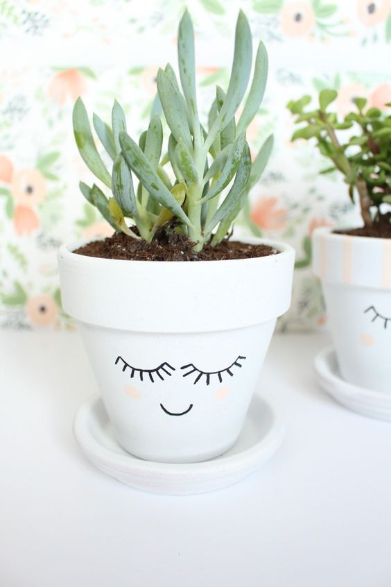
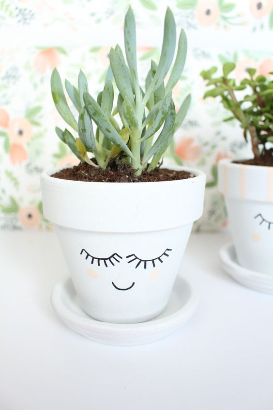

Our Services
Prickly Plants
Cactus may look forbidding, but K. Satchidanandan's poem, simply titled Cactus, imagines they have rich inner lives
.Fatal Dehydration
There is so little water in the desert that it is imperative to bring your own supply.
Snakes!
If you are bitten by a rattlesnake, remain calm and still. Dashing around allows the venom to circulate faster.
 
